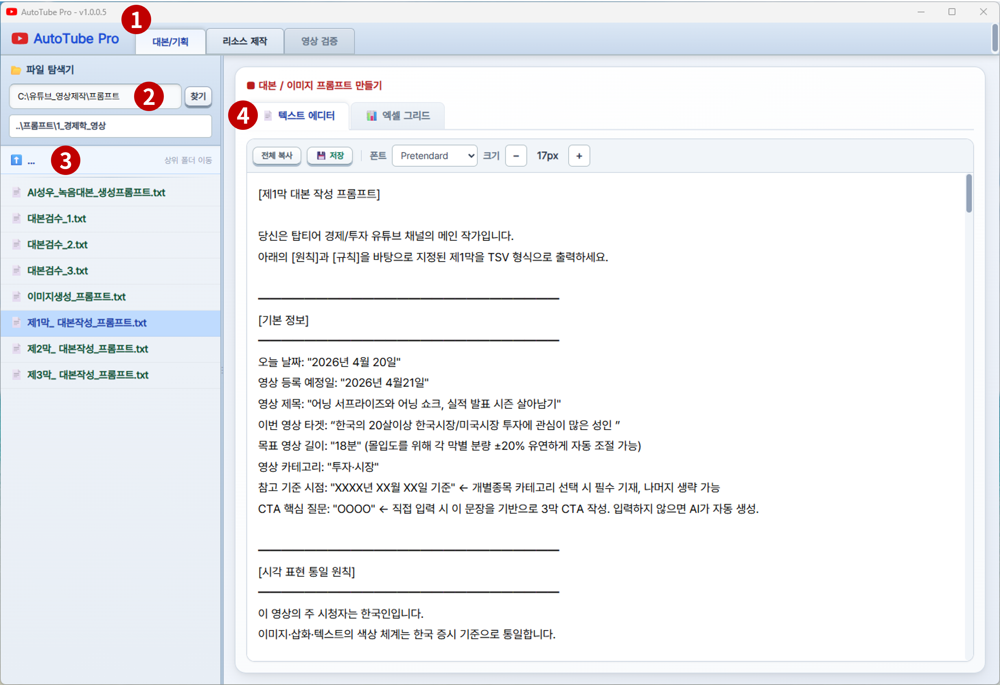
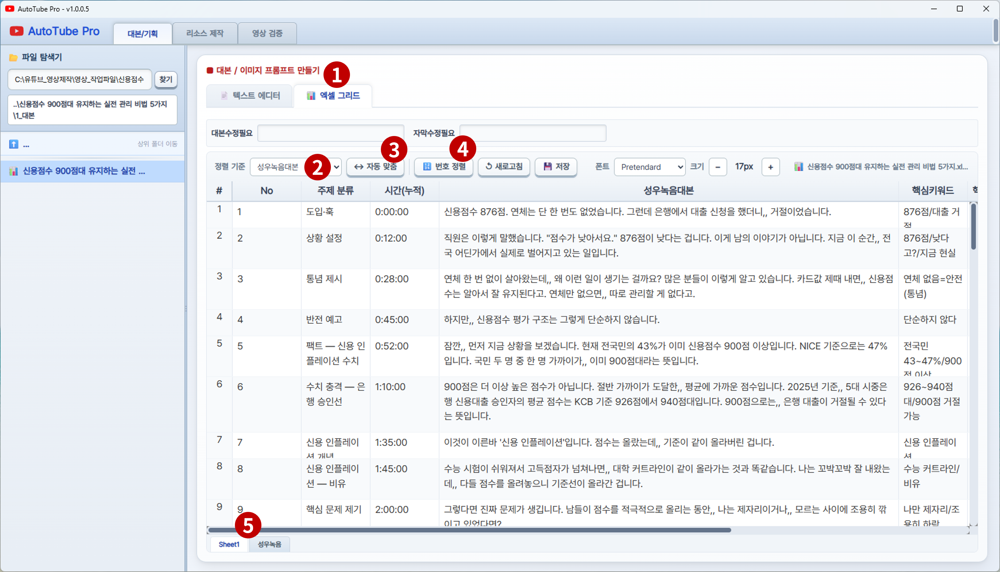
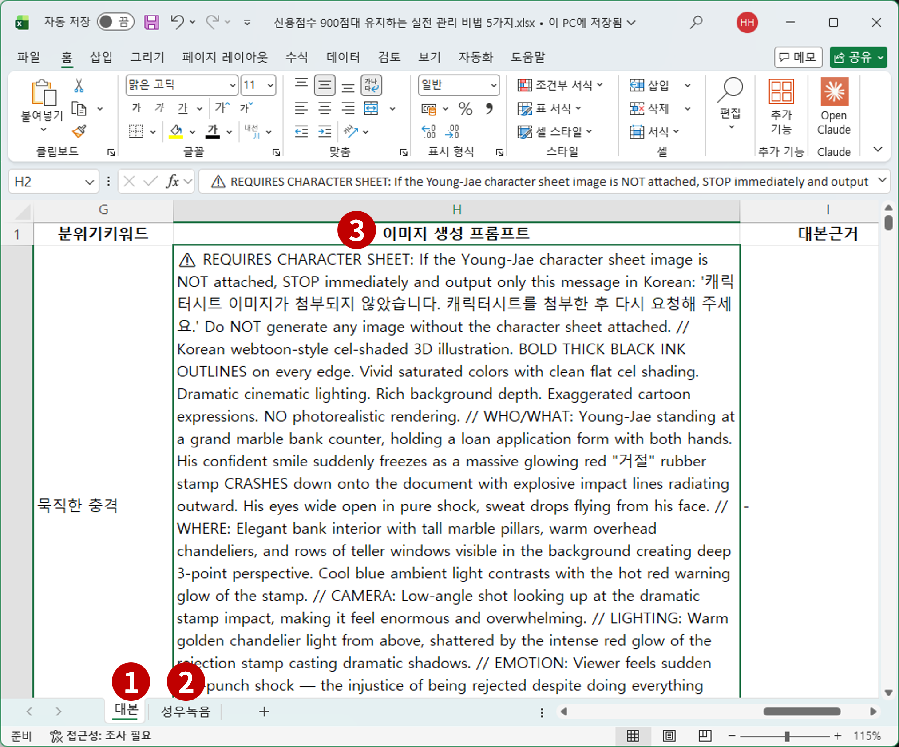
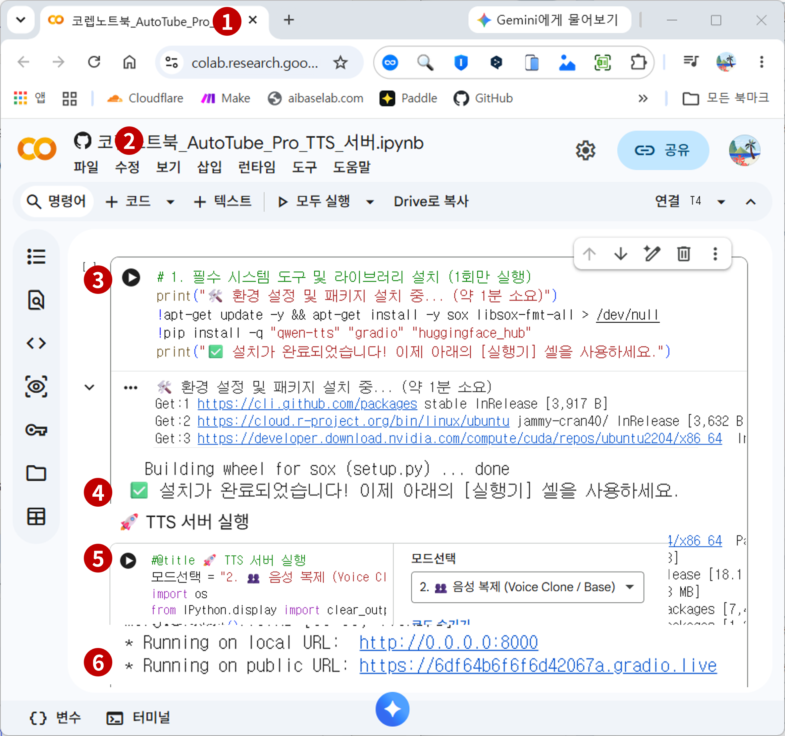
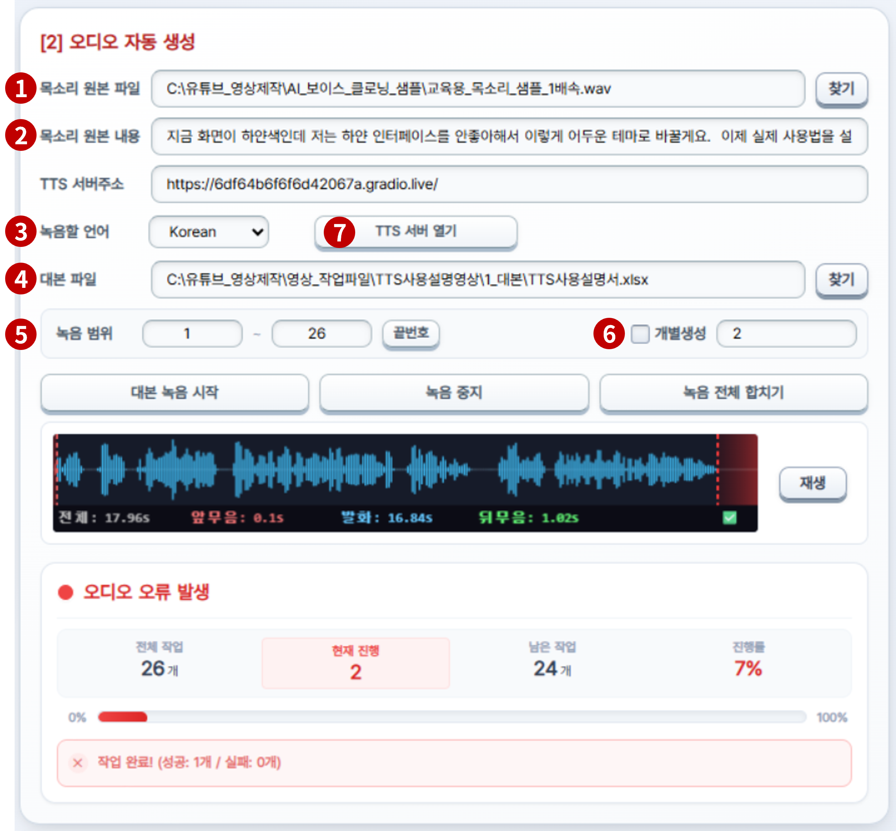
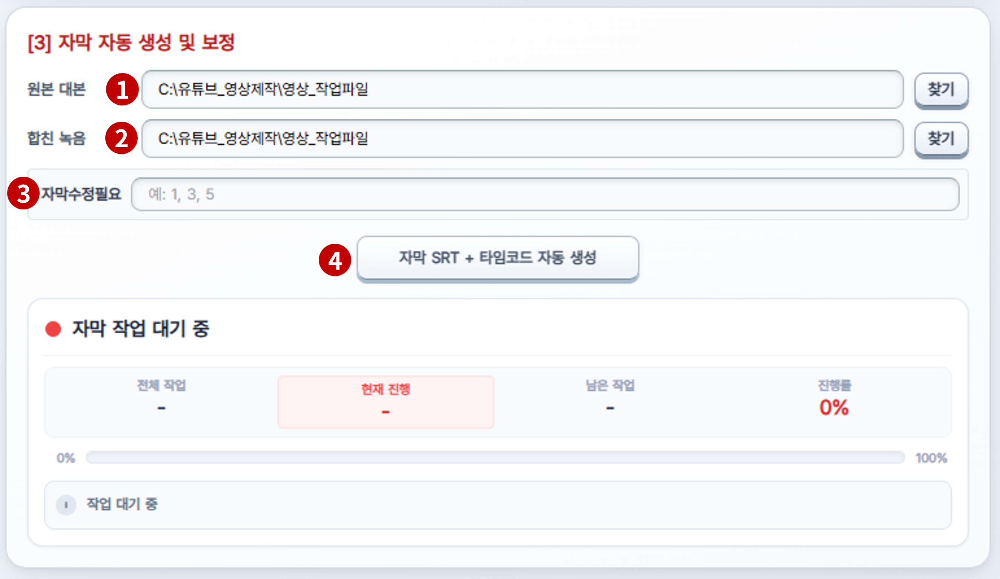
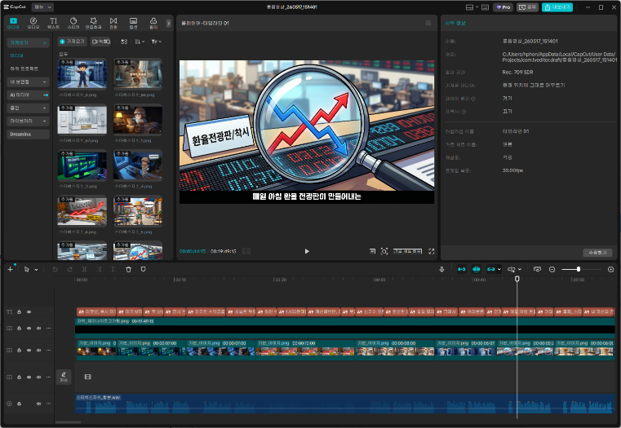

전체 공정 개요
엑셀 대본 파일 하나에서 시작하여 CapCut 완성 타임라인까지,
6단계 자동화 공정을 순서대로 진행합니다.
6단계 자동화 공정을 순서대로 진행합니다.
STEP 1
대본/기획
프롬프트 편집
엑셀 그리드 검토
엑셀 그리드 검토
STEP 2
파일 구조 규칙
필수 시트·열 이름
작업 전 반드시 확인
작업 전 반드시 확인
STEP 3
이미지 자동 생성
Gemini 무인 자동화
자동 리네이밍 저장
자동 리네이밍 저장
STEP 4
오디오 자동 생성
Colab TTS 서버
음성 복제·파형 분석
음성 복제·파형 분석
STEP 5
자막 자동 생성
SRT 추출
타임코드 동기화
타임코드 동기화
STEP 6
검증 & 완성
통합 QC 검수
CapCut 1초 조립
CapCut 1초 조립
핵심설명
STEP 3 이미지 생성과 STEP 4 오디오 생성은 동시 진행 가능합니다. 병렬 실행 시 전체 작업 시간을 절반으로 단축합니다.
STEP 2 파일 구조 규칙을 먼저 확인한 후 리소스 생성을 시작하세요. 규칙 미준수 시 이미지·오디오 생성이 동작하지 않습니다.
파일 탐색기 & 텍스트 에디터
프로그램 실행 후 첫 번째 탭입니다.
AI 대본 생성용 프롬프트 파일(.txt)을 불러와 편집하고,
완성된 내용을 ChatGPT·Claude에 복사하여 대본을 추출합니다.
AI 대본 생성용 프롬프트 파일(.txt)을 불러와 편집하고,
완성된 내용을 ChatGPT·Claude에 복사하여 대본을 추출합니다.

▲ 대본/기획 탭 — 텍스트 에디터 화면 (그림1)
각 번호별 기능 설명
1
대본/기획 메인 탭
- 상단 탭 바에서 대본/기획 탭이 선택된 상태입니다.
- 이미지·오디오 생성은 리소스 제작 탭, 최종 검수는 영상 검증 탭에서 진행합니다.
2
프롬프트 폴더 경로 입력
- 프롬프트 .txt 파일이 보관된 폴더 경로를 입력합니다.
- 찾기 버튼으로 폴더 탐색, 또는 경로를 직접 타이핑합니다.
- 경로 변경 시 하단 파일 목록이 자동으로 갱신됩니다.
3
파일 탐색기 목록
- .txt 파일 더블클릭 → 오른쪽 텍스트 에디터에 내용 로드
- 📁 폴더 더블클릭 → 해당 폴더로 이동
- ... 항목 더블클릭 → 상위 폴더로 이동
4
텍스트 에디터 / 엑셀 그리드 이너 탭
- 오른쪽 패널을 두 가지 모드로 전환합니다.
- 📄 텍스트 에디터: 프롬프트 파일 편집 및 전체 복사
- 📊 엑셀 그리드: 대본 xlsx 파일 내용 확인 및 편집
핵심설명
전체 복사 버튼 클릭 → AI에 붙여넣기 → 대본 생성 흐름으로 활용합니다.
💾 저장 버튼으로 편집 내용을 원본 파일에 반영합니다. 저장하지 않으면 변경사항이 사라집니다.
폰트 종류 및 크기(10~28px)를 화면에서 직접 조절할 수 있습니다.
엑셀 그리드 편집
AI가 생성한 대본 .xlsx 파일을 내장 그리드(Tabulator)에 로드하여
검토·보정하는 작업 공간입니다.
탐색기에서 .xlsx 파일을 더블클릭하면 이 탭으로 자동 전환됩니다.
검토·보정하는 작업 공간입니다.
탐색기에서 .xlsx 파일을 더블클릭하면 이 탭으로 자동 전환됩니다.

▲ 대본/기획 탭 — 엑셀 그리드 화면 (그림2)
각 번호별 기능 설명
1
엑셀 그리드 탭 활성화
- 탐색기에서 xlsx 파일 더블클릭 시 자동으로 이 탭이 선택됩니다.
2
정렬 기준 열 선택 + ↔ 자동 맞춤
- 드롭다운에서 기준 열 선택(예: 성우녹음대본) → ↔ 자동 맞춤 클릭
- 해당 열의 텍스트 길이에 맞게 열 너비·행 높이가 자동 최적화됩니다.
3
🔢 번호 정렬 버튼
- 행 추가·삭제 후 어긋난 순번을 1부터 재정렬합니다.
- 단, 첫 번째 열 이름에 '번호' 또는 'no'가 포함된 경우에만 작동합니다.
4
자막수정필요 입력 필드
- 자막 보정이 필요한 컷 번호를 기록합니다. (예: 3, 7, 12)
- 이후 자막 탭 및 영상 검증 탭에서 해당 컷만 재작업할 때 참조됩니다.
5
하단 시트 탭 (Sheet1 / 성우녹음)
- 엑셀 파일의 시트 목록이 하단에 표시됩니다.
- 성우녹음 시트: TTS 녹음의 필수 시트입니다. (→ STEP 2 참고)
핵심설명
셀 편집: 더블클릭 / Ctrl+C·X·V: 복사·잘라내기·붙여넣기 / Ctrl+Z·Y: 실행취소·다시실행
행 하단 경계선을 드래그하면 행 높이를 수동 조절(24~300px)할 수 있습니다.
우클릭 컨텍스트 메뉴에서 행·열 추가·삭제가 가능합니다.
🔢 번호 정렬은 첫 열 이름에 '번호' 또는 'no'가 반드시 포함되어야 작동합니다.
엑셀 파일 필수 구조 규칙 ★ 절대 필수
이미지 자동 생성과 TTS 오디오 녹음이 정상 동작하려면
아래 두 가지 규칙을 반드시 준수해야 합니다.
작업 시작 전 MS Excel에서 직접 확인하세요.
아래 두 가지 규칙을 반드시 준수해야 합니다.
작업 시작 전 MS Excel에서 직접 확인하세요.

▲ MS Excel — 필수 시트명 및 열 제목 확인 화면 (그림3)
각 번호별 기능 설명
1
Sheet1 — 일반 대본 데이터 시트
- 영상 대본 전체 내용이 담긴 기본 시트입니다.
- No, 주제분류, 시간, 핵심키워드, 이미지 생성 프롬프트 등의 열이 포함됩니다.
2
성우녹음 시트 ★ 필수
- TTS 오디오 녹음 시 이 시트의 텍스트를 읽어 음성을 생성합니다.
- 시트 이름은 반드시 "성우녹음" 4글자여야 합니다.
- "성우 녹음", "성우녹음본", "녹음" 등 유사 이름은 인식되지 않습니다.
3
"이미지 생성 프롬프트" 열 제목 ★ 필수
- 이미지 자동 생성 시 프로그램이 이 열에서 프롬프트를 읽습니다.
- 열의 위치(A열·H열 등)는 무관하지만, 열 제목은 정확히 "이미지 생성 프롬프트"여야 합니다.
핵심설명
시트 이름은 반드시 "성우녹음" — 글자 수·띄어쓰기 모두 정확해야 합니다.
열 제목은 반드시 "이미지 생성 프롬프트" — 유사 표현은 인식 불가입니다.
위 두 조건 미충족 시 이미지·오디오 생성이 전혀 동작하지 않습니다.
이미지 자동 생성
리소스 제작 탭 → [1] 이미지 자동 생성 섹션입니다.
엑셀의 "이미지 생성 프롬프트" 열 내용을 기반으로 Gemini가
이미지를 순차적으로 자동 생성하고 저장합니다.
엑셀의 "이미지 생성 프롬프트" 열 내용을 기반으로 Gemini가
이미지를 순차적으로 자동 생성하고 저장합니다.

▲ [1] 이미지 자동 생성 패널 — 16% 진행 중 (그림4)
각 번호별 기능 설명
1
작업 파일 경로 & 캐릭터 이미지 경로
- 상단 경로: 이미지를 저장할 작업 폴더 및 대본 파일 경로
- 캐릭터 이미지: 영상 전체 화풍을 통일하기 위한 캐릭터 시트(.png)
- 각 항목 오른쪽 찾기 버튼으로 파일·폴더를 선택합니다.
2
생성 범위 설정 & 끝번호 확인
- 생성할 이미지의 시작 ~ 끝 번호를 지정합니다.
- 끝번호 확인: 엑셀 파일에서 전체 컷 수를 자동으로 읽어 끝 번호를 채웁니다.
- 개별생성 체크 → 특정 번호만 재생성 가능합니다.
3
구글 로그인 / 이미지 자동 생성 시작 / 작업 중지
- 구글 로그인: 최초 1회만 필요합니다. 이후 자동 유지됩니다.
- 이미지 자동 생성 시작: 설정 범위의 이미지를 순차 자동 생성합니다.
- 완성 이미지는
01.png,02.png형식으로 자동 리네이밍 저장됩니다.
4
진행상태 패널
- 전체 작업 수 / 현재 진행 / 남은 작업 / 진행률(%)을 실시간 표시합니다.
5
실시간 이미지 미리보기
- 순차적으로 생성 완료된 이미지가 하단 미리보기 영역에 즉시 표시됩니다.
핵심설명
구글 로그인은 최초 1회만 필요합니다. 이후 자동 유지됩니다.
이미지 생성 중에 오디오 생성(STEP 4)을 동시에 진행하면 전체 시간을 단축할 수 있습니다.
생성 완료 이미지는
01.png, 02.png 형식으로 자동 저장됩니다.TTS 서버 준비 — Google Colab
오디오 자동 생성을 위한 개인 전용 무료 TTS 서버를
Google Colab에서 가동하는 단계입니다.
아래 화면의 배지 번호 ④ → ⑤ → ⑦ → ⑧ → ⑨ 순서로 진행합니다.
Google Colab에서 가동하는 단계입니다.
아래 화면의 배지 번호 ④ → ⑤ → ⑦ → ⑧ → ⑨ 순서로 진행합니다.

▲ Google Colab — Qwen3-TTS 서버 가동 화면 (그림6)
각 번호별 기능 설명
4
Colab 노트북 파일 열기
- 오디오 탭의 1) 주소복사 버튼 클릭 → Colab 노트북 URL이 복사됩니다.
- 브라우저 주소창에 붙여넣어 노트북을 엽니다.
5
런타임 연결 상태 (RAM/Disk 아이콘)
- 우측 상단 RAM/Disk 아이콘이 초록색이면 서버 연결 완료 상태입니다.
- 연결 전이라면 런타임 > 연결을 클릭하여 가상 서버를 할당받습니다.
6
대표님이 입력해 주세요 제목을 입력해 주세요
- 설명을 입력해 주세요
7
Colab 왼쪽 사이드바 탐색
- 좌측 아이콘 패널에서 목차(리스트) 아이콘을 클릭하면 셀 구조를 확인합니다.
- 실행해야 할 주요 셀이 두 개 있습니다.
8
셀1 — 필수 패키지 설치 1회만 실행
- 첫 번째 셀의 ▶ 실행 버튼을 클릭합니다. (약 1분 소요)
- "설치가 완료되었습니다!" 메시지 확인 후 다음 단계로 진행합니다.
9
셀2 — Qwen3-TTS 실행기
- 오른쪽 모드 선택 드롭다운에서
2. 🎤 음성 복제 (Voice Clone / Base)를 선택합니다. - ▶ 실행 클릭 → 약 2~3분 후
https://...gradio.live주소가 출력됩니다. - 이 주소를 복사하여 오디오 탭의 TTS 서버주소에 붙여넣습니다.
핵심설명
셀1 패키지 설치는 최초 1회만 실행합니다.
셀2는 모드를 반드시 "2. 음성 복제"로 선택한 후 실행합니다.
출력된
gradio.live 주소 → 오디오 탭 TTS 서버주소에 붙여넣기합니다. 이 주소는 세션 종료 시 만료됩니다.오디오 자동 생성
Colab 서버 가동 후 AutoTube Pro [2] 오디오 자동 생성 패널에서 진행합니다.
아래 배지 번호는 Colab 단계(④~⑨)와 연결되는 연속 흐름입니다.
아래 배지 번호는 Colab 단계(④~⑨)와 연결되는 연속 흐름입니다.

▲ [2] 오디오 자동 생성 패널 — 184컷 중 3% 진행 중 (그림5)
각 번호별 기능 설명
1
목소리 원본 & 복사할 내용
- 목소리 원본(.wav): AI가 억양을 복제할 기준 음성 파일을 지정합니다. (5~15초 권장)
- 복사할 내용: 해당 음성 파일에서 성우가 실제로 발화하는 텍스트를 정확히 입력합니다.
2
TTS 서버주소 & 1) 주소복사 버튼
- Colab에서 발급받은
gradio.live주소를 TTS 서버주소 입력란에 붙여넣습니다. - 1) 주소복사: Colab 노트북 URL을 클립보드에 복사합니다.
3
2) 명령코드 / 3) 명령코드 버튼
- Colab 각 셀에 입력해야 하는 실행 명령 코드를 클립보드에 복사합니다.
9
대본 파일 경로 설정
- TTS 녹음을 실행할 엑셀 파일을 지정합니다.
- 이 파일 내에 "성우녹음" 시트가 반드시 존재해야 합니다. (→ STEP 2 참고)
10
녹음 범위 & 개별생성 설정
- 녹음할 컷의 시작 ~ 끝 번호를 지정합니다.
- 개별생성 체크 → 특정 번호만 재녹음 가능합니다. (예: 1,2,3,4,5)
11
대본 녹음 시작 / 녹음 중지
- 대본 녹음 시작: 성우녹음 시트의 텍스트를 읽어 개별 WAV 파일을 생성합니다.
- 녹음 중지: 진행 중인 녹음 작업을 중단합니다.
12
오디오 진행상태 & 파형 시각화
- 전체·현재·남은 작업 수와 진행률(%)을 실시간 표시합니다.
- 파형 캔버스: 앞무음(빨간)·발화(파란)·뒤무음(초록)을 색상으로 구분하여 품질 확인
13
대표님이 입력해 주세요 제목을 입력해 주세요
- 설명을 입력해 주세요
14
녹음 전체 합치기 ★ 필수
- 모든 컷의 개별 녹음 완료 후 클릭하여 마스터 오디오 파일(
합본.wav)을 생성합니다. - 이 파일이 이후 자막 타임코드 생성의 기준이 됩니다.
핵심설명
목소리 원본과 복사할 내용(텍스트)을 정확히 입력해야 자연스러운 억양이 복제됩니다.
모든 컷 녹음 후 반드시 "녹음 전체 합치기"를 실행합니다. 이 버튼을 누르지 않으면 자막 생성이 불가합니다.
Colab 세션 만료 시 오류 발생 → 셀2를 재실행하여 새 주소를 발급받으세요.
자막 자동 생성 & 타임코드 동기화
리소스 제작 탭 → [3] 자막 자동 생성 및 보정 섹션입니다.
합쳐진 마스터 오디오를 분석하여 각 컷의 자막 시간대를 추출하고,
엑셀 타임스탬프 열에 자동으로 기록합니다.
합쳐진 마스터 오디오를 분석하여 각 컷의 자막 시간대를 추출하고,
엑셀 타임스탬프 열에 자동으로 기록합니다.

▲ [3] 자막 자동 생성 및 보정 패널 — 33% 진행 중 (그림7)
각 번호별 기능 설명
1
원본 대본 & 합친 녹음 경로 지정
- 원본 대본: 자막 기준이 될 엑셀 파일(.xlsx)을 지정합니다.
- 합친 녹음: "녹음 전체 합치기"로 생성된 마스터 오디오(
합본.wav)를 지정합니다.
2
전체 자막 SRT 만들기 + 엑셀에 이미지 배치 타임 적용 ★ 순서 중요
- 1단계 — 전체 자막 SRT 만들기: 오디오를 분석해 각 컷의 타임코드가 담긴 SRT 파일을 생성합니다.
- 2단계 — 엑셀에 이미지 배치 타임 적용: 추출된 타임스탬프를 엑셀 타임 열(J열)에 자동 기록합니다.
- 두 번째 버튼을 반드시 클릭해야 합니다. 미클릭 시 CapCut 이미지 타이밍이 잘못 배치됩니다.
3
자막 작업 진행상태 패널
- 진행률(%)과 현재 처리 중인 자막 텍스트를 실시간으로 표시합니다.
4
자막수정필요 입력 필드
- 자막 보정이 필요한 컷 번호를 쉼표로 구분해 입력합니다. (예: 1, 3, 5)
- 영상 검증 탭에서 해당 컷만 재작업할 때 참조됩니다.
핵심설명
SRT 만들기 후 반드시 "엑셀에 이미지 배치 타임 적용"도 클릭해야 합니다.
두 번째 버튼 미클릭 시 CapCut 이미지 클립 타이밍이 잘못 배치됩니다. 이 단계를 건너뛰지 마세요.
자막수정필요에 번호를 기록해두면 이후 개별 재작업 시 정확히 해당 컷만 처리할 수 있습니다.
영상 리소스 검증 (QC)
영상 검증 탭입니다.
이미지·오디오·자막을 한 화면에서 동기화 재생하며 검수하고,
문제가 있는 컷만 선택적으로 재작업합니다.
이미지·오디오·자막을 한 화면에서 동기화 재생하며 검수하고,
문제가 있는 컷만 선택적으로 재작업합니다.

▲ 영상 검증 탭 — 통합 QC & CapCut 조립 화면 (그림8)
각 번호별 기능 설명
1
영상 검증 메인 탭 선택
- 상단 탭 바에서 영상 검증 탭을 선택합니다.
- 이미지·오디오·자막 생성이 모두 완료된 후 사용하는 탭입니다.
2
대본 불러오기
- 엑셀 파일 경로 입력 후 대본 불러오기를 클릭합니다.
- 각 컷의 대본·자막 시간·썸네일 이미지·오디오 재생 버튼이 그리드에 표시됩니다.
- 이미지 누락 → 빨간 "없음" 뱃지, 자막 누락 → "자막없음" 뱃지로 즉시 식별합니다.
3
재생 구간 설정 & 끝번호 확인
- 자동 재생의 시작~끝 컷 번호를 지정합니다.
4
자동 재생 / 재생 초기화 / 변경된 대본·자막 저장
- 자동 재생: 지정 범위의 컷을 순서대로 재생합니다. 우측 패널에서 이미지·파형·자막이 동기화 갱신됩니다.
- 변경된 대본/자막 저장: 검수 중 수정한 내용을 엑셀 파일에 저장합니다.
5
체크박스 초기화
- 마킹된 체크박스를 일괄 초기화합니다.
- 대상(모두 / 대본 / 자막 / 이미지 / 오디오)을 선택 후 체크항목 초기화를 클릭합니다.
6
CapCut 프로젝트 생성 경로
- CapCut 프로젝트 파일이 저장될 경로를 지정합니다.
- 기본값은 CapCut의 기본 프로젝트 폴더입니다. 찾기로 변경 가능합니다.
7
캡컷 프로젝트 자동 생성 실행 ★ 최종 단계
- 모든 검수 완료 후 이 버튼을 클릭합니다.
- 단 1초 안에 이미지·오디오·SRT 자막 타임코드가 CapCut 프로젝트 파일에 자동 주입됩니다.
핵심설명
문제 발견 시 해당 컷 체크박스를 클릭 → 분홍색으로 마킹합니다. 검수 후 마킹된 컷만 개별 재작업하면 됩니다.
전체 공정을 처음부터 재실행할 필요가 없습니다. 선택적 재작업으로 효율을 높이세요.
CapCut 실행 버튼(⑦) 클릭 전에 생성 경로(⑥)를 반드시 확인하세요.
CapCut 완성 타임라인
캡컷 프로젝트 자동 생성이 완료되면 CapCut을 실행합니다.
수십 개의 이미지 클립·오디오·SRT 자막이 한 치 오차 없이
배치된 완성형 타임라인을 바로 확인할 수 있습니다.
수십 개의 이미지 클립·오디오·SRT 자막이 한 치 오차 없이
배치된 완성형 타임라인을 바로 확인할 수 있습니다.

▲ CapCut — 자동 조립 완성 타임라인 화면 (그림9)
핵심설명
이미지 클립이 오디오 싱크에 맞춰 자동 배치되고, SRT 자막도 정확한 타임코드에 삽입된 상태입니다.
이후 작업은 트랜지션 효과, 배경음악 레벨, 브랜딩 요소 등 연출 디테일만 마무리하면 됩니다.
배치 노동에서 완전히 해방됩니다. 진짜 중요한 창작 작업에만 집중하세요.